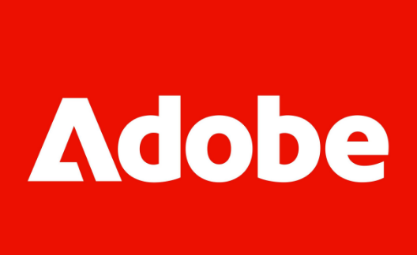

Hackathon 2025 · Asia Regional Finalist (~30 of 80+ teams)
AI Page Inspector
A tool concept that uses AI to scan a web page and flag design inconsistencies — spacing, type, color — before they reach QA. Originated the idea and built the initial prototype solo, then qualified for Asia Regional Finals, where a small team took it further — an engineer refined the prototype and a teammate produced the video, with the live presentation and Q&A split among the team. Not launched into production — the underlying need is now better served by general-purpose AI assistants, especially for understanding images inside design tools like Figma.